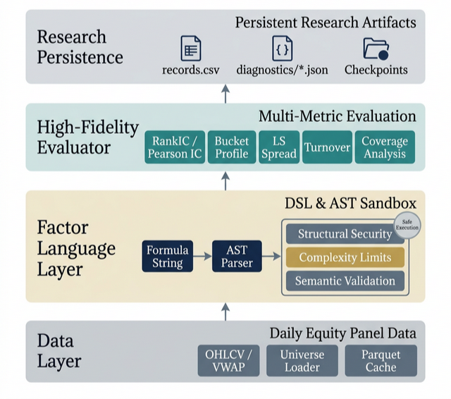
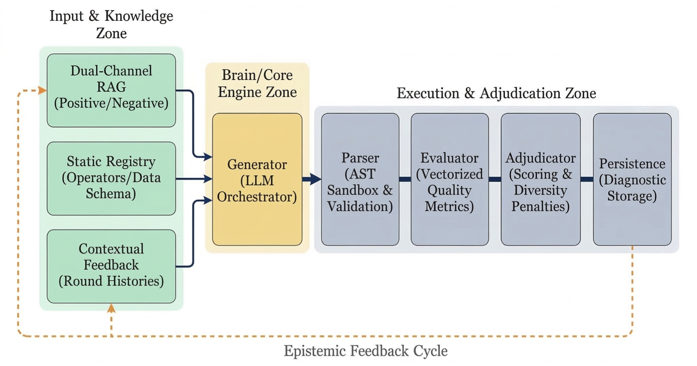
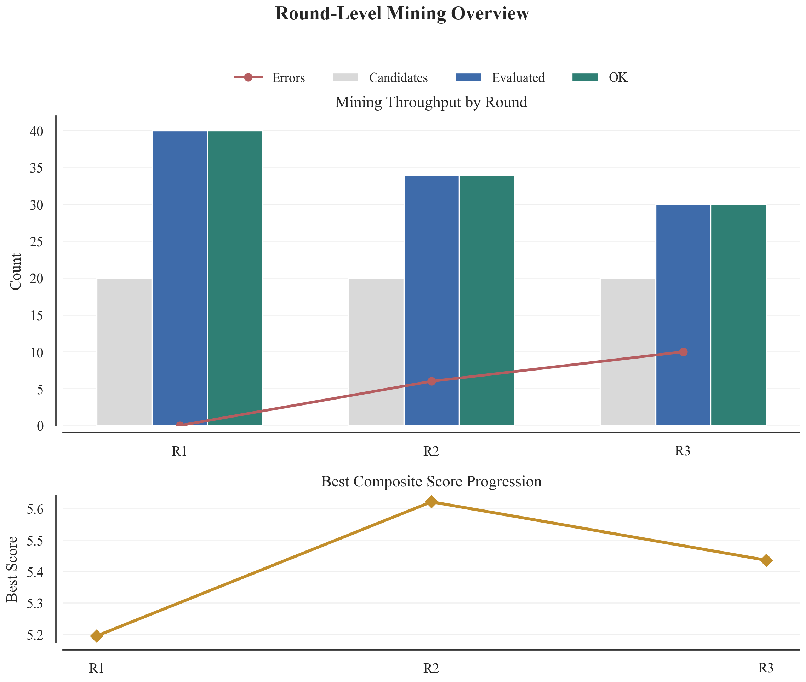
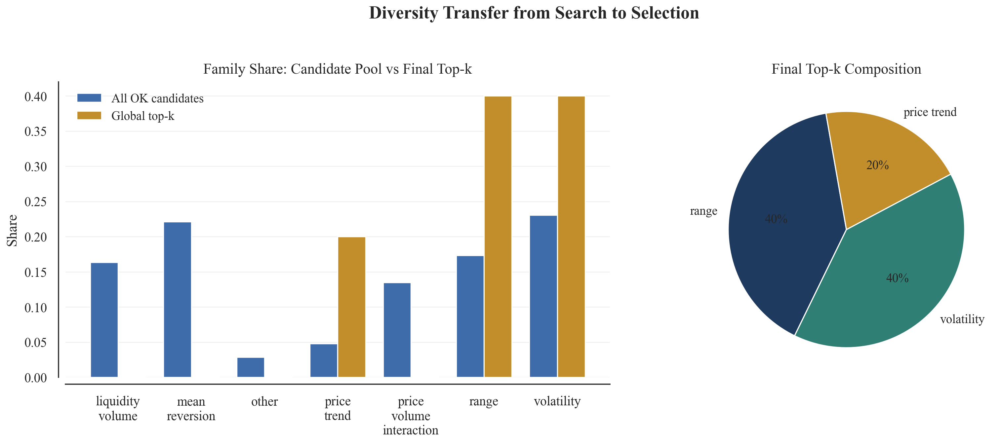
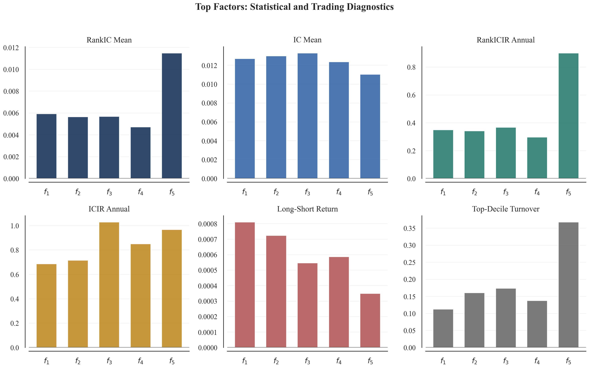
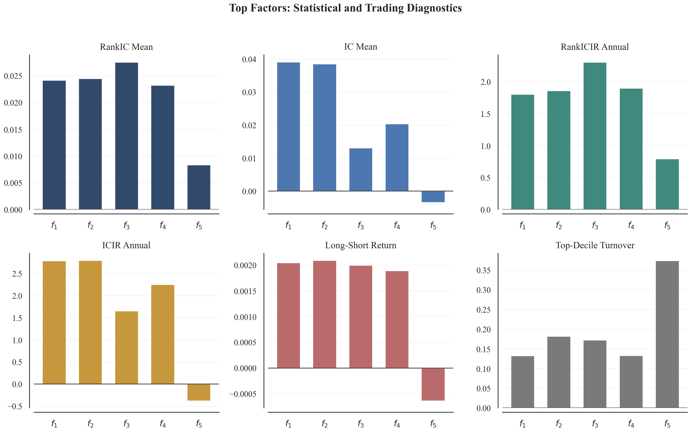
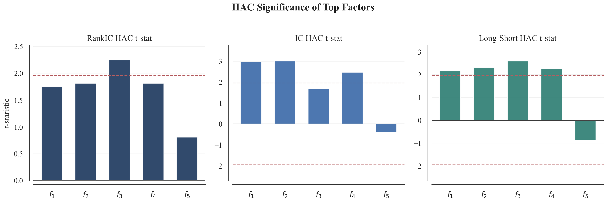
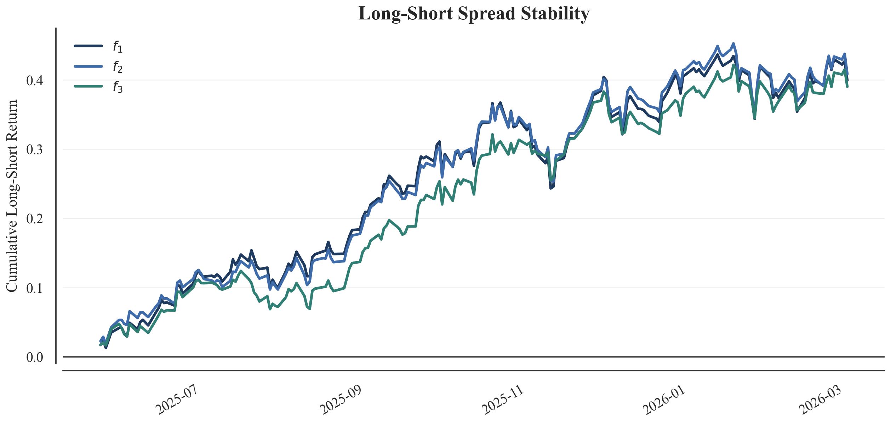

Project / arXiv Paper
Hubble: Safe, Diverse, and Reproducible Alpha Factor Discovery
Hubble is an LLM-driven alpha research workflow that generates interpretable symbolic factors, validates them through an AST execution sandbox, and ranks them with deterministic cross-sectional diagnostics, dual-channel RAG, and family-aware selection.
Overview
Automated alpha discovery is difficult because formulaic factor spaces are combinatorial, daily equity signals are noisy, and unconstrained program generation is unsafe. Hubble treats the LLM as a constrained hypothesis engine instead of a free-form code generator. Candidate factors are restricted to operator trees, evaluated by a deterministic pipeline, and fed back into later rounds with both top-factor diagnostics and family-level search information.
The current public paper reports a main run on a roughly 500-stock U.S. equity universe. The discovery panel covers 501 valid stocks and 840 trading days from 2022-01-01 to 2025-05-31. Across three mining rounds, Hubble evaluates 104 valid candidates with zero runtime crashes, then fixes the top-five factors for a held-out out-of-sample validation window from 2025-06-01 to 2026-03-13.
System Architecture
The system combines a DSL-constrained generator, a dual-channel retrieval layer, an AST sandbox, a cross-sectional evaluator, a standardized scoring module, and a persistent reporting layer. Positive RAG supplies representative mechanisms worth exploring, while negative RAG discourages crowded templates and trivial re-parameterizations. This turns retrieval into a control signal for exploration rather than a passive source of examples.
Each generated formula is archived with RankIC, Pearson IC, bucket returns, long-short spread, turnover, coverage, formula complexity, prompt metadata, and error diagnostics. The goal is not only to produce candidate factors, but to make the research process auditable after the mining run finishes.


Safety & Evaluation
The execution layer validates every candidate through a three-layer AST sandbox before evaluation. It allows only whitelisted syntax, enforces expression depth and node-count limits, verifies operator names and arities, rejects unknown variables, and blocks arbitrary Python execution. This keeps LLM exploration separate from runtime authority.
The quantitative evaluator reports both rank-based and linear evidence: RankIC, Pearson IC, annualized information ratios, HAC significance tests, bucket returns, long-short spread, turnover, coverage, and data drop diagnostics. The scoring layer standardizes heterogeneous metrics and adds penalties for formula similarity, crowded templates, and excessive factor-family concentration.
Results & Validation
The final selected factors span range, volatility, and price-trend families rather than collapsing into a single crowded liquidity-volume motif. In the held-out OOS window, both range factors and both volatility factors remain positive; several achieve HAC-significant Pearson IC and long-short evidence. The weakest in-sample trend factor decays materially, which is useful evidence that the scoring layer is not treating all top-k factors as equally robust.
| Metric | Value | Interpretation |
|---|---|---|
| Discovery universe | 501 U.S. equities | S&P 500-based daily OHLCV panel. |
| Discovery period | 2022-01-01 to 2025-05-31 | 840 trading days used for factor discovery. |
| OOS period | 2025-06-01 to 2026-03-13 | 195 trading days held out before validation. |
| Valid candidates | 104 | Evaluated across three mining rounds. |
| Runtime crashes | 0 | Confirms sandbox-first operational stability. |
| Top families | range, volatility, trend | Family-aware scoring transferred diversity into selected winners. |






Implementation Scope
- Designed the DSL-constrained alpha generation workflow and safe operator-tree execution boundary.
- Implemented AST validation, complexity limits, operator arity checks, formula similarity controls, and persistent diagnostics.
- Built the cross-sectional evaluation layer for RankIC, Pearson IC, HAC tests, bucket returns, long-short spread, turnover, and coverage.
- Developed the dual-channel RAG and family-aware selection logic used to reduce crowded-template collapse.
Paper
In accordance with Celestial Quant Lab's release policy, the implementation code will be made available after comprehensive testing, optimization, and internal review. For now, the public project artifact is the arXiv paper, which documents the framework, experiment design, validation results, and limitations.